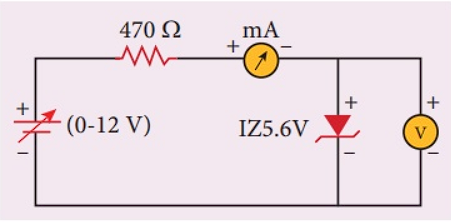

Forward Bias of Zener Diode
In forward bias, the Zener diode behaves like a regular diode, allowing current to flow after the threshold voltage is reached.
----------------------------------------------------------
• Works like a regular diode.
• Current flows easily when the anode is connected to positive terminal and cathode connected to cathode.
• Conducts after a small threshold voltage (~0.7V for silicon).
Reverse Bias of Zener Diode

In reverse bias, the Zener diode does not conduct until the reverse voltage exceeds the breakdown voltage, after which it regulates the voltage.
----------------------------------------------------------
• Initially, very little current flows.
• When the reverse voltage reaches the Zener breakdown voltage (e.g., 5.6V, 9.1V, etc.) then diode starts conducting in reverse.